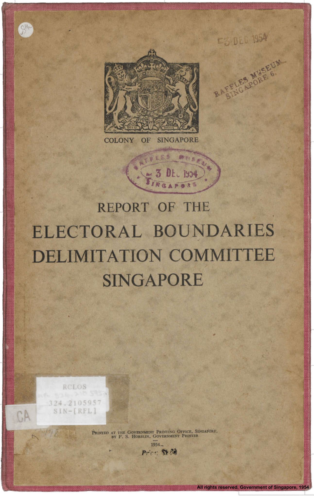

Community-building Through Election Mapping
How does a person interact with their community? In a densely populated city, what does it mean to be a member of a constituency if had to cross into another constituency every day to work? Historically, these important questions of boundary drawing were determined by the organic evolution of geography and electoral institutions over hundreds of years. Singapore, however, do not have a long history of democracy. Neither do we enjoy a deep culture of democratic interaction.
The Boundaries Committee were even unable to get accurate figures of where each voter lived; they admitted that much of their predicted electorate sizes were nothing more than educated guesses.
The Boundaries Committee needed to draw boundaries in a way which is conducive to the development of political communities where people discussed and debated issues of collective importance. Certain places, by their location, are conducive to becoming community centres. Yet, merely by drawing lines on a map, people are forced to go to different places to carry out their political needs, be it attending rallies or just raising issues to their elected Member of Legislative Assembly. People experience politics differently, with different representatives, candidates. Representatives will champion different issues depending on who is – and who is not – in their constituency.
The Boundaries Commission wanted to preserve the natural centres of communities to the best of their ability. So, they took a rather novel approach:
“We tried to look at our proposed divisions through the eyes of the elector and the candidate. The elector should see clearly why he is in one division rather than in another; lines of demarcation, therefore, must be easy to follow. The area should not be bigger than the elector would travel normally and with ease. He must see that he has a common interest with his fellow electors. From the point of view of the candidate, the division must not be too large in number or diverse in interest for him to canvass his electors, or care for his constituents, once elected. He is concerned with the roads and with centres where he can hold meetings.”
